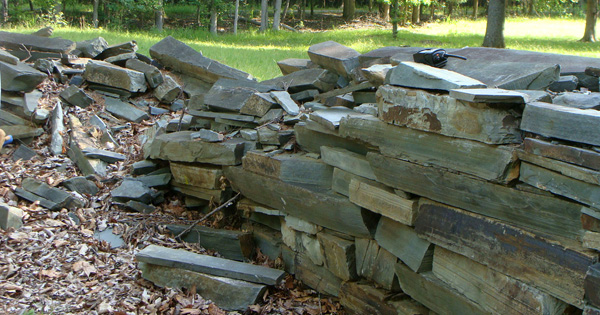

posted: 10/6/2015
Entrance Wall Restoration
A summary of the wall restoration project.
At meetings of Friends of Morrow Mountain State Park in early 2014 a number of members suggested that an ideal project for the relatively new Friends group to tackle would be to restore the two front entrance walls.
The Civilian Conservation Corps had built those walls with dry staked argillite stones in 1940 and 2015 is the 75th Anniversary of the opening of Morrow Mountain State Park. (The park officially opened for public use in the summer of 1939, however, the official park dedication ceremonies were not until June 29, 1940.)
The stone used at the front walls, like most all of the stone used throughout the park, were cut from argillite quarries from inside the park.
The original dry stacked walls had been reworked a couple of times since 1940. FMMSP said as the walls deteriorated someone attempted to drive over some weaker sections with a four-wheel drive vehicle.
Members wanted the walls to be restored as closely as possible to the original look of dry stacked stones, but also to use some newer techniques that would ensure that the walls lasted for many years.
Entrance Wall before restoration. Credit Vanessa Mullinix
In early June of 2014 the north side wall (on the left as one enters the park) restoration project began.
Volunteer labor provided by members of FMMSP, some in the community and some volunteers from the Robin Sage, Army Special Forces Qualification Program, helped take down the old argillite stones and set them to the side for the stone masons to use later. Significant in-kind labor was donated to dig the footing for the wall and to spread the concrete.
Dean’s Ready Mixed, Inc. and Pate Masonry Supply, LLC provided the concrete, sand, mortar, block, etc., at a discount for the project.
Then Rocky Parker of Rocky Parker Masonry, who also discounted his charges, began a project to rebuild the north wall.
In mid-August volunteers again did a lot of landscaping around the north wall, and the extra argillite stones were moved and stored for use on future projects. In late August under the guidance of FMMSP Director Walter Deppe, all the volunteers listed above helped split, and build the cedar rail fence along the north side entrance to replace the dilapidated, old cedar rail fence.
This north side wall project cost $9,548, but with the many volunteer hours of work, in-kind contributions and discounts given, the north side project is estimated to be worth more than $14,000.
The payments of $9,548 were made possible from the club’s largest gift, a grant from N.C. Friends of State Parks of $3,000, and then major gifts from Fiberon Decking in New London and Bank of North Carolina as well as hundreds of smaller gifts from members and the community.
The entire process almost repeated itself starting in late June 2015. Once again volunteers from FMMSP and the community gathered to take down the stones on the much longer south side wall (on the right as one enters the park) and set them to the side for Parker, the stone mason.
Steve Austin Landscaping contributed labor and equipment to dig out and remove several large stumps, dig the footing and handle the concrete.
Again at a discount Dean’s Ready Mix and Pate Masonry Supply provided the concrete, block, mortar, sand, etc. During July and August Parker rebuilt the south wall. In early September some initial clean-up around the wall took place.
The extra argillite stones are once again being removed and stored for future use. Additional landscape work will be done this fall as well as the installation of a cedar rail fence at the back of the south wall.
The south side wall project cost $16,824, not counting volunteer hours, in-kind contributions and discounts given. The payments were made possible again from our largest gift, a grant of $5,000 from N.C. Friends of State Parks.
The next largest gift was given by Culp Lumber Co. followed by a gift from Bank of Stanly as well as hundreds of smaller gifts from members and the community.
Friends of Morrow Mountain State Park representatives say that with direct money, volunteer labor, in-kind contributions and discounts from contractors created a fully-restored front entrance on both the north and south sides that has a value of more than $37,000.
FMMSP Board Chairwoman Vanessa Mullinix, who organized the volunteer labor, contacted the contractors and directly raised most of the major gifts.
The project involved many contractors, generous business and individual contributors, but the greatest thanks must go to N.C. Friends of State Parks and grants totaling $8,000, along with many hours of volunteer labor by folks who made this wall restoration project a reality in celebration of the park’s 75th Anniversary.
This summary of the wall restoration project was prepared by John D. Young, member of FMMSP, along with information from treasurer, Tevis Smith and chairwoman, Vanessa Mullinix.
The above article appeared in the Stanly News & Press, Albemarle, NC, September 26-27, 2015, page 5A.
Pictures of the Entrance Wall : before, during, and after this project.